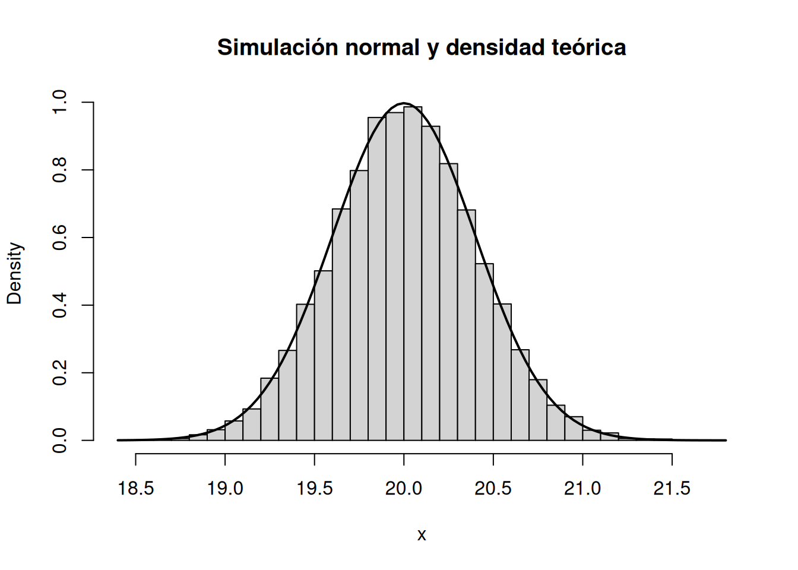

punif(0.2, min = -0.5, max = 0.5) -
punif(-0.2, min = -0.5, max = 0.5)[1] 0.4Al finalizar este capítulo, el estudiante será capaz de:
Las distribuciones uniforme, exponencial y normal aparecen constantemente en ingeniería y ciencias, pero representan situaciones muy diferentes.
Reconocer la estructura del fenómeno es más importante que memorizar una fórmula.
Decimos que
\[ X\sim U(a,b),\qquad a<b, \]
si su densidad es
\[ \boxed{ f_X(x)= \begin{cases} \dfrac{1}{b-a}, & a\le x\le b,\\ 0, & \text{en otro caso}. \end{cases}} \]
La densidad es constante en todo el intervalo.
La CDF es
\[ F_X(x)= \begin{cases} 0, & x<a,\\ \dfrac{x-a}{b-a}, & a\le x\le b,\\ 1, & x>b. \end{cases} \]
Por ello, si
\[ a\le c<d\le b, \]
entonces
\[ \boxed{P(c<X<d)=\frac{d-c}{b-a}}. \]
La probabilidad depende únicamente de la longitud relativa del subintervalo.
Para
\[ X\sim U(a,b), \]
se tiene
\[ \boxed{E[X]=\frac{a+b}{2}} \]
y
\[ \boxed{\operatorname{Var}(X)=\frac{(b-a)^2}{12}}. \]
Supongamos que un error de redondeo puede considerarse uniformemente distribuido entre \(-0.5\) y \(0.5\) unidades:
\[ X\sim U(-0.5,0.5). \]
La probabilidad de que el error absoluto sea menor que \(0.2\) es
\[ P(|X|<0.2)=P(-0.2<X<0.2)=\frac{0.4}{1}=0.4. \]
En R:
punif(0.2, min = -0.5, max = 0.5) -
punif(-0.2, min = -0.5, max = 0.5)[1] 0.4dunif(0.3, min = 0, max = 1) # densidad[1] 1punif(0.3, min = 0, max = 1) # P(X <= 0.3)[1] 0.3qunif(0.9, min = 0, max = 1) # percentil 90[1] 0.9runif(5, min = 0, max = 1) # simulación[1] 0.3789546 0.1489107 0.1193892 0.4791506 0.3964928La distribución exponencial es uno de los modelos más importantes para tiempos de espera continuos.
Decimos que
\[ X\sim\operatorname{Exp}(\lambda),\qquad \lambda>0, \]
si
\[ \boxed{ f_X(x)= \begin{cases} \lambda e^{-\lambda x}, & x\ge0,\\ 0, & x<0. \end{cases}} \]
El parámetro \(\lambda\) se interpreta como una tasa.
Para \(x\ge0\),
\[ \boxed{F_X(x)=1-e^{-\lambda x}}. \]
Por tanto,
\[ \boxed{P(X>x)=e^{-\lambda x}}. \]
Esta última expresión suele llamarse función de supervivencia.
Si
\[ X\sim\operatorname{Exp}(\lambda), \]
entonces
\[ \boxed{E[X]=\frac{1}{\lambda}} \]
y
\[ \boxed{\operatorname{Var}(X)=\frac{1}{\lambda^2}}. \]
Si un componente presenta una tasa de falla de
\[ \lambda=0.02\text{ fallas por hora}, \]
y el tiempo hasta la siguiente falla se modela exponencialmente, entonces
\[ E[X]=\frac{1}{0.02}=50\text{ horas}. \]
La probabilidad de que funcione más de 80 horas es
\[ P(X>80)=e^{-0.02(80)}. \]
En R:
pexp(80, rate = 0.02, lower.tail = FALSE)[1] 0.2018965La distribución exponencial satisface
\[ \boxed{P(X>s+t\mid X>s)=P(X>t)}. \]
Si un componente ha sobrevivido \(s\) horas y el modelo exponencial es apropiado, el tiempo adicional de espera tiene la misma distribución que al inicio.
Esta propiedad es análoga a la propiedad sin memoria de la distribución geométrica, pero ahora en tiempo continuo.
Sea
\[ X\sim\operatorname{Exp}(0.1). \]
Entonces
\[ P(X>15\mid X>10)=P(X>5)=e^{-0.5}. \]
En R:
condicional <- pexp(15, rate = 0.1, lower.tail = FALSE) /
pexp(10, rate = 0.1, lower.tail = FALSE)
directa <- pexp(5, rate = 0.1, lower.tail = FALSE)
c(condicional = condicional, directa = directa)condicional directa
0.6065307 0.6065307 dexp(4, rate = 0.2)[1] 0.08986579pexp(4, rate = 0.2)[1] 0.550671qexp(0.95, rate = 0.2)[1] 14.97866rexp(5, rate = 0.2)[1] 0.3241642 0.8665960 13.4868593 6.7161623 15.5436491La distribución normal ocupa un lugar central en probabilidad, estadística, medición e ingeniería.
Decimos que
\[ X\sim N(\mu,\sigma^2),\qquad \sigma>0, \]
si su densidad es
\[ \boxed{ f_X(x)=\frac{1}{\sigma\sqrt{2\pi}} \exp\left[-\frac{(x-\mu)^2}{2\sigma^2}\right] }. \]
El parámetro \(\mu\) determina el centro y \(\sigma\) controla la dispersión.
La densidad normal:
Además,
\[ E[X]=\mu, \]
\[ \operatorname{Var}(X)=\sigma^2. \]
La normal estándar es
\[ \boxed{Z\sim N(0,1)}. \]
Si
\[ X\sim N(\mu,\sigma^2), \]
entonces la transformación
\[ \boxed{Z=\frac{X-\mu}{\sigma}} \]
produce una variable normal estándar.
Este proceso se llama estandarización.
El diámetro de cierta pieza se modela como
\[ X\sim N(20,0.4^2). \]
Para calcular
\[ P(X\le20.5), \]
estandarizamos:
\[ z=\frac{20.5-20}{0.4}=1.25. \]
Por tanto,
\[ P(X\le20.5)=P(Z\le1.25). \]
En R podemos calcular directamente:
pnorm(20.5, mean = 20, sd = 0.4)[1] 0.8943502O mediante la normal estándar:
pnorm((20.5 - 20) / 0.4)[1] 0.8943502Para
\[ X\sim N(\mu,\sigma^2), \]
\[ P(a<X<b)=F_X(b)-F_X(a). \]
En R:
pnorm(20.5, 20, 0.4) - pnorm(19.6, 20, 0.4)[1] 0.735695A veces conocemos la probabilidad y buscamos el valor \(x\).
Si queremos \(x\) tal que
\[ P(X\le x)=0.95, \]
usamos
qnorm(0.95, mean = 20, sd = 0.4)[1] 20.65794Los cuantiles son fundamentales en tolerancias, control de calidad e inferencia estadística.
Para una distribución normal aproximadamente:
\[ P(|X-\mu|<\sigma)\approx0.6827, \]
\[ P(|X-\mu|<2\sigma)\approx0.9545, \]
\[ P(|X-\mu|<3\sigma)\approx0.9973. \]
En R:
for (k in 1:3) {
print(pnorm(k) - pnorm(-k))
}[1] 0.6826895
[1] 0.9544997
[1] 0.9973002Esta regla es específica de la normal y no debe confundirse con la desigualdad general de Chebyshev.
dnorm(0) # densidad estándar en 0[1] 0.3989423pnorm(1.96) # P(Z <= 1.96)[1] 0.9750021qnorm(0.975) # percentil 97.5[1] 1.959964rnorm(5, mean = 10, sd = 2)[1] 13.176456 9.092480 7.678782 10.872255 11.557839Si
\[ X\sim N(\mu,\sigma^2) \]
y
\[ Y=aX+b, \]
entonces
\[ \boxed{Y\sim N(a\mu+b,a^2\sigma^2)}. \]
La familia normal permanece dentro de la misma familia bajo transformaciones lineales.
set.seed(2026)
n <- 20000
x <- rnorm(n, mean = 20, sd = 0.4)
hist(x, probability = TRUE, breaks = 35,
main = "Simulación normal y densidad teórica",
xlab = "x")
curve(dnorm(x, mean = 20, sd = 0.4),
add = TRUE, lwd = 2)
| Distribución | Soporte | Parámetros | Media | Varianza | Aplicación típica |
|---|---|---|---|---|---|
| Uniforme | \([a,b]\) | \(a,b\) | \((a+b)/2\) | \((b-a)^2/12\) | valor igualmente plausible dentro de un intervalo |
| Exponencial | \([0,\infty)\) | \(\lambda\) | \(1/\lambda\) | \(1/\lambda^2\) | tiempo de espera con tasa constante |
| Normal | \((-\infty,\infty)\) | \(\mu,\sigma\) | \(\mu\) | \(\sigma^2\) | mediciones y variación alrededor de un centro |
El interactivo permite seleccionar uniforme, exponencial o normal y modificar sus parámetros. También permite elegir un intervalo \([a,b]\) para visualizar el área de probabilidad.
En la normal se muestran además la media, la desviación estándar y la versión estandarizada del intervalo. En la exponencial se muestra la función de supervivencia y en la uniforme se observa que la probabilidad depende directamente de la longitud del intervalo.
Construye tres densidades controladas por deslizadores:
Para cada una crea dos deslizadores \(c<d\) y sombrea el área bajo la curva entre ambos límites. Observa cómo cambia la probabilidad al modificar los parámetros.
En la normal, mueve \(\mu\) manteniendo \(\sigma\) fija y observa el desplazamiento horizontal. Después fija \(\mu\) y modifica \(\sigma\) para observar el cambio de dispersión.
Antes de elegir una distribución, pregúntate:
La elección debe justificarse por el mecanismo del fenómeno, no sólo por la forma de un histograma.
sd = sigma^2 en R en lugar de sd = sigma.rate = lambda con la media en la exponencial.Uniforme:
\[ f(x)=\frac{1}{b-a},\qquad a\le x\le b. \]
Exponencial:
\[ f(x)=\lambda e^{-\lambda x},\qquad x\ge0. \]
Normal:
\[ f(x)=\frac{1}{\sigma\sqrt{2\pi}} \exp\left[-\frac{(x-\mu)^2}{2\sigma^2}\right]. \]
Para una normal,
\[ Z=\frac{X-\mu}{\sigma}\sim N(0,1). \]
| Material | Formato | Acceso | Propósito |
|---|---|---|---|
| Cuaderno de Google Colab | Notebook interactivo (R) | Abrir en Colab | Ejecutar y modificar ejemplos de uniforme, exponencial y normal. |
| Cuaderno de R | R Markdown | Abrir cuaderno R | Reproducir probabilidades, cuantiles, gráficas y simulaciones. |
| Interactivo | HTML / GeoGebra | Abrir recurso | Explorar parámetros, densidades y áreas de probabilidad. |
| Presentación | PDF / PPT | Próximamente | Se incorporará cuando se proporcionen los enlaces. |
| Video | Video | Próximamente | Explicación audiovisual complementaria. |
| Infografía | Imagen / PDF | Próximamente | Síntesis visual de distribuciones y fórmulas clave. |
El tratamiento de las distribuciones uniforme, exponencial y normal sigue la presentación estándar de Walpole et al. (2012), Devore (2016), Montgomery y Runger (2018) y Johnson (2018). Los ejemplos, ejercicios, simulaciones y código en R son originales; el enfoque computacional general toma como referencia Kerns (2010).